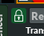

Common mixer features
Modular Mixer
Mixer Strips
Common mixer features
Header buttons

| ⇝ | Reset A/B (actual: A/B/C/D/E/F/G/H). |
| A - H | Select A/B. |
| W | Move mixer into it's own window. Tip: To make the mixer window independent of the main window, unset |
| M | Switch between modular mixer and mixer strips. |
| I | Display the instrument widget in the bottom of the mixer. |
General
- Most functionality is accessed by using the popup menus. If you want to assign a keybinding to an entry in a popup menu, right-click the entry.
- To prevent radium from automatically changing current instrument when dragging a slider, muting an object, and so fort, enable the padlock-checkbox in the upper left corner of the instrument widget:
.
The same checkbox can also be found as "Forced as current instrument" in the popup menu of a sound object or a mixer strip:
Modular Mixer

Header buttons

| CPU | Display CPU usage instead of instrument name. The meaning of the three numbers:
|
| C1 | If enabled, show normal connections. |
| C2 | If enabled, show bus connections. |
| ⇝Zoom | Reset Zoom |
| => | Rotate mixer view. |
General
- Move objects with right mouse button.
- Delete objects or connections by shift-right-clicking.
- Move and connect object in one operation: Place one object on top of another object.
- Zoom in and out by pressing CTRL and using the scroll wheel.
Mixer objects
- Buttons:
- "M": Mute
- "S": Solo
- "B": Bypass
- Colors:
- Blue border: Current mixer object
- Red border: Selected mixer object
- Purple border: Current mixer object, and selected.
- White text of instrument name: Current instrument
- Double-click the name of an object to open GUI.
Selection
- Ctrl-click to select/deselect an object.
- Create rectangle to select all objects inside the rectangle.
- Click outside an object to deselect all objects.
Connections
- Create an audio connection by dragging a line between the right side and left side of two objects.
- Create an event connection by dragging a line between the name of two instruments.
- Delete a connection by shift-right-clicking.
Mixer Strips
(Show mixer strips by unchecking the "M" checkbox in the header.)
Header buttons

| 1:3 | Upper part of the mixer strips are shorter than the lower parts. |
| 1:1 | Upper parts and lower parts of the mixer strips have the same height. |
| 3:1 | Upper parts of the mixer strips are taller than the lower parts. |
| 1R | Display 1 row of mixer strips. |
| 2R | Display 2 rows of mixer strips. |
| 3R | Display 3 rows of mixer strips. |
| 4R | Display 4 rows of mixer strips. |
Order
The order of the strips is not random or chronological. The sorting logic has four stages:- Sort by whether the strip is a bus or not. Non-buses are displayed first.
- Sort by vertical position in the modular mixer (top -> bottom).
- Sort by horizontal position in the modular mixer (left -> right).
- Slightly rearrange the strips order so that the audio flow always goes from left to right.
Selection
- Ctrl-click the instrument name to select/deselect a strip.
How to...
Q: Set accurate volum by writing a number?A: Click the number box right above the volume slider
Q: Reset highest peak value in the box above the audio meter?
A: Just click the box.
Q: Create a new mixer strip?
A: You can't do that directly in a mixer strips window. You either have to create a new instrument in the modular mixer, add a new instrument to a track in the editor, or add a new audio seqtrack.
Q: Create a plugin or send?
A: Use the popup menu
Q: Delete a plugin or send?
A: Shift-right-click.
Q: Change between a wide and narrow strip?
A: Double-click instrument-name.
Q: Delete a mixer strip?
A: Right-click a mixer strip, and select "Delete". Or shift-right-click the name.